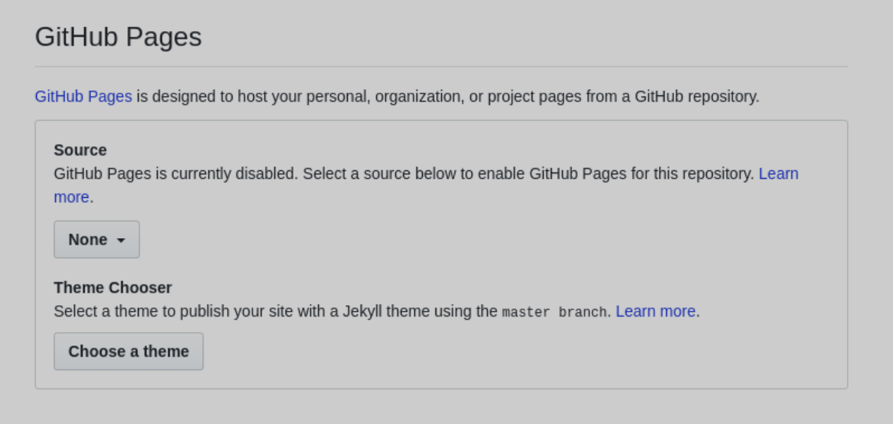

本ページの目的
本ページでは無料でwebページを公開したい人のために，githubのサービスを利用してwebページを公開する方法を紹介します．
※前提として，gitの最低限の知識とhtml，cssを書けるという人向けです．
準備するもの
- githubアカウント
- webページのソースファイル
- webページのソースファイルを置くためのリポジトリ
手順
webページ専用リポジトリを作成
まず，新規でwebページ用のリポジトリを作り，index.htmlというファイルを置きます．これはgithub側でソースファイルがどれか判別するための制約になるので，もし別の名前で作っていたらリネームしてください．あとは作成したソースファイル好きに編集してpushしてください．
以下の画像のようになっていれば大丈夫です．
この状態ではまだwebページは公開されていません．次に，githubの方で公開するように設定します．
リポジトリの設定
まず，githubのリポジトリページのsettingタブをクリックして下の方にあるGitHub Pagesの項目まで移動してください．
SourceのところがNoneになっていると思います．
ここをmaster branch（公開したいブランチ名）に変更すると以下のようになり,webページのURLも表示されます．
これで公開の設定は完了です．
反映まで少し時間がかかるみたいなので，少し待ってからアクセスしてみてください．
以上！
おまけ
僕の現在のwebページの構成はこんな感じです．
リンクや画像を分けて置いて相対パスで参照することも可能です．